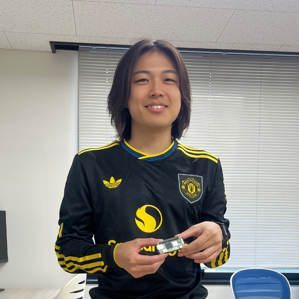

Taiga
Sugawara.
Taiga Sugawara ／ Graduate School of Engineering Science, The University of Osaka
My research focuses on control theory for multi-agent systems
and cooperative object transportation by multiple robots.

THE UNIVERSITY OF OSAKAEXPLORE